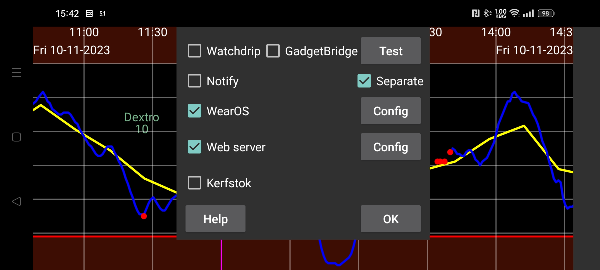

ar az be de es fa fr hi it ja ko nl pl pt ru tr uk uz zh en
Hazırda Juggluco-da qlükoza göstəricilərini saatda görməyin yeddi yolu var.
Bildir seçimi aktiv olduqda hər yeni qlükoza göstəricisi üçün Android bildirişi yaradılır. Bəzi saatlar bildirişi yalnız yeni bildiriş yaradıldığı zaman alır; belə saatlar üçün Ayrı seçimini də aktivləşdirin. Bu saatlarda siqnallar barədə bildirişlərin saata çatması üçün də Ayrı seçimi tələb olunur.
Bu seçim aktivləşdirildikdə Juggluco qlükoza göstəricilərini Watchdrip+ proqramına göndərir. Watchdrip+ qlükoza göstəricilərini göstərən saat üzlərini MiBand/Amazfit saatlarına ötürür.
GadgetBridge MiBand/Amazfit saatlarında hava məlumatlarını göstərməyə imkan verir. GadgetBridge seçimi aktiv olduqda Juggluco qlükoza göstəricilərini hava məlumatı kimi bu proqrama göndərir. Watchdrip ilə müqayisədə üstünlüyü məlumatın daha sürətli çatması, çatışmazlığı isə daha az məlumat göstərilməsidir.
Juggluco qlükoza göstəricisini və dəyişmə istiqamətini göstərən oxu hava məlumatının yer adı sahəsinə yerləşdirir. Saatda bu sahə Weather altında görünür. Müəllif həmin yer adını göstərən saat üzü tapa bilməyib. mmol/L üçün vergüldən əvvəlki hissə maksimum temperatur, sonrakı hissə minimum temperatur kimi göstərilir. mg/dL göstəriciləri temperatur üçün çox böyük olduğundan son rəqəm minimum temperatur, qalan rəqəmlər maksimum temperatur kimi göndərilir. Məsələn, 106 mg/dL maksimum temperatur 10, minimum temperatur 6 kimi görünür.
Dəyişmə istiqaməti hava işarəsini təyin edir: qlükozanın azalması qar, artması isə yağış ilə göstərilir. Bu məlumat cari temperatur sahəsinə də yazılır: sıfırdan böyük dəyər artımı, sıfırdan kiçik dəyər azalmanı göstərir.
Kerfstok saatda Miqdarları (məsələn, insulin dozalarını) daxil etməyə və cari qlükoza göstəricisini görməyə imkan verən Garmin tətbiqidir. Juggluco hər yeni göstəricini alan kimi Kerfstok-a ötürür. Buna görə Kerfstok ən son qlükoza göstəricisini göstərir. O, Garmin tərəfindən dəstəklənən fəaliyyətləri də qeyd edə, sürət və məsafəni göstərə bilir. Əlavə məlumat: Saat → Kerfstok statusu → Kömək və https://www.juggluco.nl/Kerfstok.
Digər tətbiqlər Juggluco-nun göndərdiyi qlükoza yayımlarından (broadcast) göstəriciləri alıb saata ötürə bilər. Məsələn, G-Watch (Tizen OS və ya Wear OS) Glucodata Broadcast-dan göstəriciləri ala bilir. Baxın: sol menyu → Tənzimləmələr → Məlumat mübadiləsi.
Juggluco-da xDrip/Nightscout ilə uyğun daxili veb-server var. Bunun sayəsində xDrip üçün hazırlanmış saat tətbiqləri birbaşa Juggluco ilə işləyə bilir. xDrip hər 5 dəqiqədən bir yeni qlükoza göstəricisi göstərir, Juggluco isə hər dəqiqə yeni göstərici təqdim edir. Juggluco xDrip saat tətbiqlərinə ən son göstəricini göndərir, lakin yalnız tətbiq bunu soruşduqda. Buna görə saatda göstərilən məlumatın nə qədər köhnə olması tətbiqin sorğu vaxtından asılıdır.
Garmin saat üzləri və məlumat sahələri adətən hər 5 dəqiqədən bir qlükoza göstəricisini soruşur. xDrip vasitəsilə işlədikdə göstərici çox vaxt 10 dəqiqə köhnə olurdu. Birbaşa Juggluco-ya qoşulduqda bu saat üzlərində göstərici ən çoxu təxminən 6 dəqiqə köhnə olur.
Kerfstok istifadə edə bilmirsinizsə, Garmin-də nisbətən yeni göstəriciləri almaq üçün alternativlər mövcuddur. xDrip vidcetindən fəaliyyət qeydə alınarkən də istifadə etmək mümkündür. Məsələn, adi Garmin idman tətbiqində fəaliyyəti qeyd edərkən əliniz boşdursa, vidcetə keçə bilərsiniz. Göstəricini müntəzəm yeniləyən xDrip idman tətbiqi də var. Tətbiqi elə vaxtda başlatmağa çalışın ki, növbəti sorğu yeni göstərici daxil olduqdan dərhal sonraya düşsün. Məlumat sahələri və saat üzləri ideal variant olardı, lakin Garmin-in məhdudiyyətləri onların faydasını azaldır.
Əvvəllər Juggluco veb-serverindən Fitbit üçün Glance saat üzü ilə istifadə etmək olurdu. 2024-cü ilin ortalarından etibarən Fitbit saatlarında üçüncü tərəf tətbiqlərinə icazə verilmir: xəbər. Bu qərarın Avropa İttifaqı qaydaları ilə bağlı olduğu ehtimal edilir; alternativ tətbiq mağazalarına icazə vermə tələbindən yayınmaq üçün sadə fitnes izləyicisi modelinə keçid mümkün səbəblərdəndir. Bəzi istifadəçilər VPN vasitəsilə yeri ABŞ olaraq dəyişdirdikdən sonra üçüncü tərəf tətbiqlərini yenidən quraşdıra bildiklərini bildirirlər.
Veb-server interfeysi haqqında əlavə məlumat: https://www.juggluco.nl/Juggluco/webserver.html.
Juggluco-nun Wear OS üçün uyğunlaşdırılmış versiyası var. Onun ekranı kiçik ölçüyə uyğunlaşdırılıb və saat üzü əlavə edilib. Bu üzü adi Wear OS saat üzü kimi quraşdırmaq mümkündür. O, vaxtla yanaşı Bluetooth vasitəsilə alınan cari qlükoza göstəricisini də göstərir.